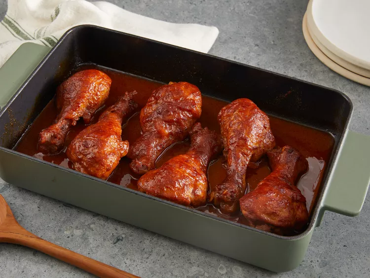

Chicken Drumsticks

These baked BBQ chicken legs are tender and juicy with a deliciously crispy skin. An easy homemade BBQ sauce adds sticky goodness to these drumsticks that are baked in the oven instead of grilled. Serve with mashed potatoes or seasoned rice and drizzle the BBQ sauce over top.
Ingredients
- 6 chicken drumsticks
- ⅓ cup ketchup
- ⅓ cup white vinegar
- ½ cup water, or more to taste (Optional)
- ¼ cup brown sugar
- 4 teaspoons butter, cut into small chunks
- 1 teaspoon salt, or to taste
- 2 teaspoons Worcestershire sauce, or to taste
- 2 teaspoons dry mustard
- 2 teaspoons chili powder, or to taste
Steps
- Assemble ingredients, preheat oven to 400 degrees F (200 degrees C), and place drumsticks in a 7x11-inch baking dish.
- Whisk ketchup, vinegar, water, brown sugar, butter, salt, Worcestershire sauce, mustard, and chili powder together in a bowl; pour mixture over drumsticks. Cover with aluminum foil.
- Bake in the preheated oven until no longer pink at the bone and the juices run clear, about 1 hour, turning chicken about halfway through. An instant-read thermometer inserted near the bone should read 165 degrees F (74 degrees C).